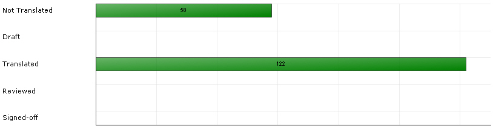

Translation Count
The translation count task is used to calculate the translation progress of a given current project. It determines the status (confirmation level) of the segments and words contained in the project files, i.e. it calculates how many segments, words, and characters have reached the confirmation levels e.g. translated, reviewed, signed-off, etc. This task is quite likely to be run several times during a project lifecycle in order to determine the current progress of a project. Note that for this task there are no specific settings.
The screenshot below illustrates how Trados Studio visualizes the progress of a project by showing the number of translated, reviewed, etc. words using bar charts:

These bar charts are updated when running the translation count task, which happens, for example when the user triggers this task automatically or when a return package is imported. As return packages contain fully (or partly )translated, reviewed, and signed-off content, importing the package will trigger an update of the translation count statistics.
To run a translation count task for a particular target language programmatically implement a function that takes a FileBasedProject object and the target language locale string as parameters. The function below illustrates how to run the automatic task by applying the RunAutomaticTask to your project. The method requires the target file ids and the task template id as parameters. The target language file ids are retrieved by applying the GetTargetLanguageFiles method to the project as shown in the example below:
public void RunTranslationCount(FileBasedProject project, string trgLocale)
{
ProjectFile[] deFiles = project.GetTargetLanguageFiles(new Language(CultureInfo.GetCultureInfo(trgLocale)));
AutomaticTask translationCountTask = project.RunAutomaticTask(
deFiles.GetIds(),
AutomaticTaskTemplateIds.TranslationCount);
}
See Also
Update Translation Memory Settings